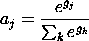

Activity of units in the So implementation is determined jointly by the unit specifications and the layer specifications. The unit specifications determine how each unit individually computes its net input and activation, while the layer specifications determine the actual activation of the unit based on a competition that occurs between all the units in a layer.
All So algorithms use the same unit type, SoUnit. The only thing
this type adds to the basic Unit is the act_i value, which
reflects the "independent" activation of the unit prior to any
modifications that the layer-level competition has on the final
activations. This is primarily useful for the soft Cl units, which
actually transform the net input term with a Gaussian activation
function, the parameters of which can be tuned by viewing the resulting
act_i values that they produce.
There are three basic types of unit specifications, two of which derive from a common SoUnitSpec. The SoUnitSpec does a very simple linear activation function of the net input to the unit. It can be used for standard competitive learning, or for Hebbian learning on linear units.
The SoftClUnitSpec computes a Gaussian function of the distance
between the weight and activation vectors. The variance of the Gaussian
is given by the var parameter, which is not adapting and shared by
all weights in the standard implementation, resulting in a fixed
spherical Gaussian function. Note that the net variable on units
using this spec is the distance measure, not the standard dot product of
the weights and activations.
The SomUnitSpec simply computes a sum-of-squares distance function of the activations and weights, like the SoftClUnitSpec, but it does not apply a Gaussian to this distance. The winning unit in the SOM formalism is the one with the weight vector closest to the current input activation state, so this unit provides the appropriate information for the layer specification to choose the winner.
There are three algorithm-specific types of layer specifications, corresponding to the Cl, SoftCl, and SOM algorithms, and the parent SoLayerSpec type which simply lets the units themselves determine their own activity. Thus, the SoLayerSpec can be used when one does not want any competition imposed amongst the units in a layer. This can be useful in the case where both layers are clamped with external inputs, and the task is to perform simple pattern association using Hebbian learning. Note that all layer specs do not impose a competition when they are receiving external input from the environment.
There is one parameter on the SoLayerSpec which is used by the
different algorithms to determine how to pick the winning unit. If
netin_type is set to MAX_NETIN_WINS, then the unit with
the maximum net input value wins. This is appropriate if the net input
is a standard dot-product of the activations times the weights (i.e.,
for standard competitive learning). If it is MIN_NETIN_WINS,
then the unit with the minimal net input wins, which is appropriate when
this is a measure of the distance between the weights and the
activations, as in the SOM algorithm. Note that soft competitive
learning does not explicitly select a winner, so this field does not
matter for that algorithm.
The ClLayerSpec selects the winning unit (based on
netin_type), and assigns it an activation value of 1, and it
assigns all other units a value of 0. Thus, only the winning unit gets
to learn about the current input pattern. This is a "hard"
winner-take-all competition.
The SoftClLayerSpec does not explicitly select a winning unit. Instead, it assigns each unit an activation value based on a Soft Max function:

Where g_j is the Gaussian function of the distance between the
unit's weights and activations (stored in act_i on the SoUnit
object). Thus, the total activation in a layer is normalized to add up
to 1 by dividing through by the sum over the layer. The exponential
function serves to magnify the differences between units. There is an
additional softmax_gain parameter which multiplies the Gaussian
terms before they are put through the exponential function, which can be
used to sharpen the differences between units even further.
Note that SoftClLayerSpec can be used with units using the SoUnitSpec to obtain a "plain" SoftMax function of the dot product net input to a unit.
Finally, the SomLayerSpec provides a means of generating a
"neighborhood kernel" of activation surrounding the winning unit in a
layer. First, the unit whose weights are closest to the current input
pattern is selected (assuming the SomUnitSpec is being used, and the
netin_type is set to MIN_NETIN_WINS). Then the neighbors
of this unit are activated according to the neighborhood kernel
defined on the spec. The fact that neighboring units get partially
activated is what leads to the development of topological "map"
structure in the network.
The shape and weighting of the neighborhood kernel is defined by a list
of NeighborEl objects contained in the neighborhood member.
Each of these defines one element of the kernel in terms of the offset
in 2-D coordinates from the winning unit (off), and the
activation value for a unit in this position (act_val).
While these can be created by hand, it is easier to use one of the
following built-in functions on the SomLayerSpec:
KernelEllipse(int half_width, int half_height, int ctr_x, int ctr_y)
KernelRectangle(int width, int height, int ctr_x, int ctr_y)
KernelFromNetView(NetView* view)
StepKernelActs(float val)
act_val values of the existing kernel elements
to be all the same value, val.
LinearKernelActs(float scale)
act_val values of the existing kernel elements
as a linear function of their distance from the center, scaled by the
given scale parameter.
GaussianKernelActs(float scale, float sigma)
act_val values of the existing kernel elements
as a Gaussian function of their distance from the center, scaled by the
given scale parameter, where the Gaussian has a variance of sigma.
One can see the resulting kernel function by testing the network and viewing activations. Also, there is a demo project that illustrates how to set up a SOM network in `demo/so/som.proj.gz'.